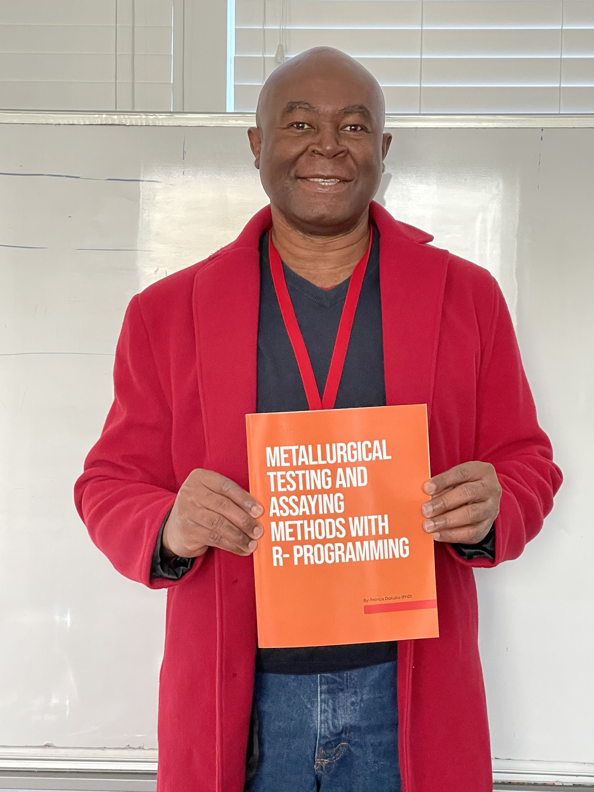

Francis Dakubo is a Metallurgical and Mineral Processing Engineer with a lot of field experience. He is currently working on Aqueous Metallurgy, which is the theoretical part accompanying this practical book. Francis Dakubo has over 20 years of experience in Metallurgy and Mineral Processing. He has held many positions, including; Chief Research Metallurgist at Performance Laboratories in Ghana; was the Chief Metallurgical Investigator in the Bogoso Gold gravity pilot testing Design and Construction project for the treatment of transition gold ores in Ghana, Consulting Metallurgist for Goldfields Ghana Limited in Heap leaching testing for low-porosity ores, Projects Engineer at the Center Metallurgy and Mineral Processing (CAMP),
Senior Metallurgist at Freeport Morenci mine, Process & Hydrometallurgy Operation Manager at Asarco Kearny mine,Technical Services manager at LiCycle at Rochester, Reaserch and Development Manger at Aqua Metals Lithium battery Recycling facility in Sparks, Nevada, Temporal Math Teacher at Pima Community College in Tucson, Arizona, Process and Metallurgical Manager at Doe Run and Process Excellence Analyst at EVRAZ Steel Manufacturing Plant Colorado. He obtained his first diploma in Mineral Engineering from the University of Mines and Technology in Ghana. He then went on to obtain a second bachelor’s in metallurgical and Materials Engineering and a master’s in metallurgical and Mineral Processing from Montana Tech of the University of Montana. A master’s in Applied Statistics and Data Science and Analytics from the University of Kansas, a master’s in environmental engineering, and a Ph.D. in Metallurgical and Mineral Processing Engineering from the University of Arizona.
